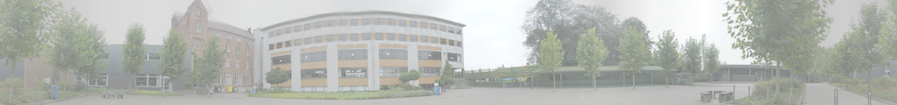

 |
Welkom op de archiefpagina van het Sint-Teresiacollege (Eksaarde). Slechts een paar klikken verwijderd van een leuke herinnering uit de periode 1998‑2018! Voor actuele informatie kun je terecht op onze VLOT!-webstek via www.vlot‑stc.be. |